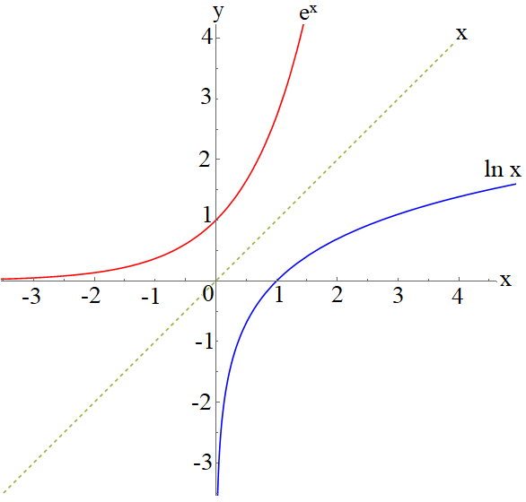
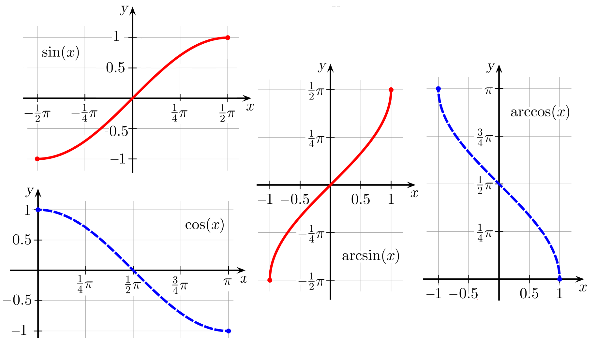
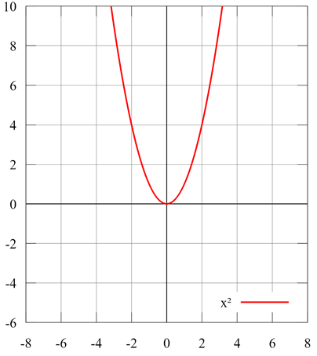
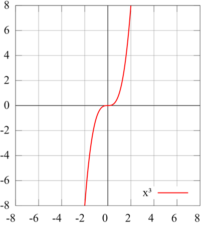
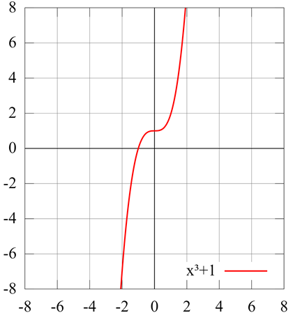

Functions#
Inverse Functions#
So far we have defined a function \( y=y(x) \), but given this, is it possible to reverse the function to find \( x=x(y) \)? This reversing of the function process is called finding the inverse function. The notation for the inverse of a function \( f(x) \) is \( f^{-1}(x) \). This is often confused with the reciprocal function \( \frac{1}{f(x)} \). For trigonometric functions, the prefix “arc” is commonly added to indicate the inverse function, such as \( \arcsin(x) \) etc.
Algorithm for Finding Inverse#
A simple method of finding the inverse of a function is first to write it out using two variables, for example, using \( x \) as the independent variable and \( y \) as the dependent variable:
Then swap the variable letters:
Finally, rewrite this equation making \( y \) the subject:
This is now our inverse function.
In finding the inverse, we need to first consider the domain and co-domain. Strictly speaking, these swap around. For example:
Examples of Well-Known Inverse Functions#
The exponential and logarithm functions are the inverse of each other, and if we plot them, we can see the mirror image over the line \( y = x \).


Even and Odd Functions#
In mathematics, an even function is a real function such that \( f(-x) = f(x) \) for every \( x \) in its domain. Similarly, an odd function is a function such that \( f(-x) = -f(x) \) for every \( x \) in its domain.
They are named for the parity of the powers of the power functions which satisfy each condition: the function \( f(x) = x^n \) is even if \(n\) is an even integer, and it is odd if \(n\) is an odd integer.
Even functions are those real functions whose graph is self-symmetric with respect to the \( y \)-axis, and odd functions are those whose graph is self-symmetric with respect to the origin.
If the domain of a real function is self-symmetric with respect to the origin, then the function can be uniquely decomposed as the sum of an even function and an odd function.
Definition and examples#
Evenness and oddness are generally considered for real functions, that is, real-valued functions of a real variable. However, the concepts may be more generally defined for functions whose domain and codomain both have a notion of additive inverse. This includes abelian groups, all rings, all fields, and all vector spaces. Thus, for example, a real function could be odd or even (or neither), as could a complex-valued function of a vector variable, and so on.
The given examples are real functions, to illustrate the symmetry of their graphs.
Even functions#

\( f(x) = x^2 \) is an example of an even function.
A real function \( f \) is even if, for every \( x \) in its domain, \( -x \) is also in its domain and:
or equivalently
Geometrically, the graph of an even function is symmetric with respect to the \( y \)-axis, meaning that its graph remains unchanged after reflection about the \( y \)-axis.
Examples of even functions are:
The absolute value \( x \mapsto |x| \)
\( x \mapsto x^2 \)
\( x \mapsto x^4 \)
Cosine \( \cos \)
Gaussian function \( x \mapsto \exp(-x^2) \)
Odd functions#

\( f(x) = x^3 \) is an example of an odd function.
A real function \( f \) is odd if, for every \( x \) in its domain, \( -x \) is also in its domain and:
or equivalently
Geometrically, the graph of an odd function has rotational symmetry with respect to the origin, meaning that its graph remains unchanged after rotation of 180 degrees about the origin.
If \( x = 0 \) is in the domain of an odd function \( f(x) \), then \( f(0) = 0 \).
Examples of odd functions are:
The sign function \( x \mapsto \mathrm{sign}(x) \)
The identity function \( x \mapsto x \)
\( x \mapsto x^3 \)
Sine \( \sin \)

\( f(x) = x^3 + 1 \) is neither even nor odd.
Uniqueness#
If a function is both even and odd, it is equal to 0 everywhere it is defined.
If a function is odd, the absolute value of that function is an even function.
Addition and subtraction#
The sum of two even functions is even.
The sum of two odd functions is odd.
The difference between two odd functions is odd.
The difference between two even functions is even.
The sum of an even and odd function is not even or odd unless one of the functions is equal to zero over the given domain.
Multiplication and division#
The product of two even functions is an even function.
That implies that the product of any number of even functions is an even function as well.
The product of two odd functions is an even function.
The product of an even function and an odd function is an odd function.
The quotient of two even functions is an even function.
The quotient of two odd functions is an even function.
The quotient of an even function and an odd function is an odd function.
Composition#
The composition of two even functions is even.
The composition of two odd functions is odd.
The composition of an even function and an odd function is even.
The composition of any function with an even function is even (but not vice versa).
Even–odd decomposition#
If a real function has a domain that is self-symmetric with respect to the origin, it may be uniquely decomposed as the sum of an even and an odd function, which are called respectively the even part and the odd part of the function, and are defined by
and
It is straightforward to verify that \( f_\text{even} \) is even, \( f_\text{odd} \) is odd, and \( f = f_\text{even} + f_\text{odd} \).
This decomposition is unique since, if
where \( g \) is even and \( h \) is odd, then \( g = f_\text{even} \) and \( h = f_\text{odd} \), since